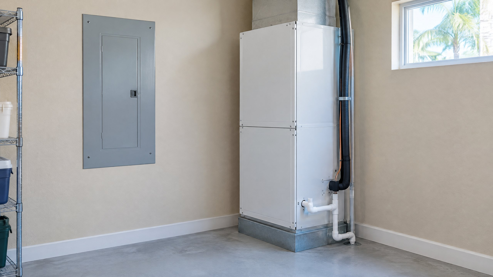

What a Tripped AC Breaker Actually Tells You
A circuit breaker is a protective device that interrupts electricity when it detects a condition its design is intended to stop. CPSC explains that a breaker opens the circuit when overload current exceeds its rating and advises investigating the cause rather than simply resetting it. That general precaution applies across breaker brands; it is not a diagnosis of your equipment.[1]
That does not mean the breaker is necessarily defective, or that the compressor must be replaced. A trip identifies an interruption at the circuit protection—not the component responsible for it. A technician must distinguish an equipment problem from a supply, connection, wiring, or protection problem before recommending a repair.
This article concerns a breaker known to have tripped. An AC that starts and stops while its breaker remains on is a different symptom; see our short-cycling explanation. A blank thermostat also does not, by itself, establish a breaker trip.
Stop the Reset Cycle Before Troubleshooting
Set the thermostat so it is no longer requesting cooling, if you can use it without approaching damaged or wet equipment. Leave the tripped breaker alone and contact a professional. Do not keep resetting it to see whether the AC will stay on this time. Restoring power is not the same as correcting the condition that interrupted it.
Do not remove electrical-panel covers, open equipment cabinets, touch wiring, replace a breaker, or install a larger-rated breaker to keep cooling running. Those are not homeowner observation tasks. NFPA identifies frequent trips and signs such as flickering lights, sparks, discoloration, and burning odors as reasons to call a qualified electrician.[2]
Smoke, sparks, or a burning odor change the priority
Do not approach or touch suspected damaged electrical equipment. If there is smoke, fire, or an immediate threat, leave the area and call 911 from outside. Arrange qualified help rather than attempting another restart. Do not touch a cabinet to check whether it feels hot.
Report the Sequence Without Recreating It
The useful question is what you already noticed before cooling stopped. Did the interruption occur as cooling started, after it had been running, or during a power disturbance? Did only the AC stop, or did other parts of the home lose power? Describe the sequence as an observation, not as proof of a failed part.
| What you already noticed | What to report | What not to conclude |
|---|---|---|
| Trip as cooling started | Whether it interrupted the first start or a later cycle | Timing alone does not prove a capacitor or compressor failure |
| Trip after a period of operation | Earlier cooling, unusual sounds, and any visible changes | Runtime alone does not identify an overheating component |
| Several circuits affected | Which rooms or appliances also lost power | Do not assume the AC is the only problem |
| Recent storm or water exposure | When it occurred and what you observed from a distance | Do not approach wet equipment or blame weather without inspection |
If a panel label was already known, share it. Do not open a cabinet, operate breakers, or start the system again just to collect details. A photograph taken from an ordinary standing position can help explain the setup, but gathering information should not require entering a wet, damaged, or otherwise concerning area.
What an HVAC Assessment Should Establish
Ask for the findings behind the proposed repair, not a parts list based only on the trip. ENERGY STAR includes checking electrical connections, measuring voltage and current on motors, and inspecting the starting, operating, and shutdown controls in professional HVAC maintenance.[3] Those are measurements and inspections for trained personnel, not steps to perform through an open cabinet.
The assessment should identify which portion of the system is affected, document the relevant observations or tests, and explain whether the electrical supply also needs evaluation. Equipment checks may include motors, controls, connections, and operating conditions. There is no universal homeowner current reading or reset count that proves a repair is appropriate.
Filter, coil, and airflow condition can matter to overall equipment operation, and ENERGY STAR includes them in routine care.[3] However, finding a dirty filter does not establish why this breaker tripped. Changing a filter is not clearance to keep resetting an unresolved electrical interruption.
AC Contractor or Electrician: Who Should You Call?
If the interruption concerns the AC circuit or equipment, contact an AC repair provider and clearly state that the breaker has tripped repeatedly. Ask whether the visit can evaluate the equipment and whether a qualified electrician may be needed for the branch circuit, breaker, or electrical panel.
When multiple circuits are affected, or there are electrical warning signs away from the AC, describe that broader problem to a qualified electrician as well. NFPA recommends qualified electrical inspection for frequent breaker trips.[2] An HVAC visit does not automatically include repairs to the home's electrical distribution system.
For Tampa and North Tampa homes, mention recent power interruptions or water exposure only when they actually occurred. They can be useful context, but they do not identify the cause. Cooling urgency should not turn repeated resets into a routine workaround.
Before Approving the Proposed Repair
Request a written explanation of the diagnosed issue, the work proposed, any electrical work outside the scope, and how the repaired system will be checked. Our AC repair quote questions explain what a useful written scope should contain. If someone recommends equipment replacement, ask which documented findings support it rather than treating every breaker trip as a replacement decision.
Frequently Asked Questions
Can I keep resetting the AC breaker until the technician arrives?
No. Leave the tripped breaker alone and stop requesting cooling. Repeatedly restoring power does not correct the underlying condition. Report the trips you already observed without trying to reproduce them.
Does an immediate trip mean the capacitor is bad?
No. The timing is useful information, but it does not identify a capacitor, motor, compressor, breaker, or wiring fault by itself. Professional inspection and appropriate measurements are needed before choosing a repair.
Can a dirty air filter explain the breaker trip?
A dirty filter deserves attention as part of equipment care, but its presence is not proof of the electrical cause. Do not assume replacing it resolves repeated trips or makes another reset appropriate.
What if the indoor fan runs but the outdoor unit has lost power?
Indoor and outdoor equipment may have separate power arrangements. A running indoor fan does not confirm power or correct operation at the outdoor unit. Describe what you already noticed to the service provider without opening cabinets or restoring the tripped circuit.
Sources
- CPSC: General breaker precautions in its FPE investigation notice — circuit interruption and investigating trips rather than simply resetting. The notice was revised in 2011; only its general precautions are used here, not a brand-specific conclusion.
- NFPA: Electrical Home Fire Guidance — qualified electrical inspection and warning signs, including frequent trips and burning odors.
- ENERGY STAR: Maintenance Checklist — professional connection, motor, control, and cooling-system checks.
Editorial Source Review & Publisher
Published by On The Way Heating & Air for Tampa and North Tampa homeowners. This article was checked against the cited electrical-protection and HVAC maintenance guidance; it does not diagnose an individual system. Dustin Miller began HVAC work with his father in 2006 and has helped build several service companies. That family-rooted background is company context, not a claim that he personally inspected the equipment described here.